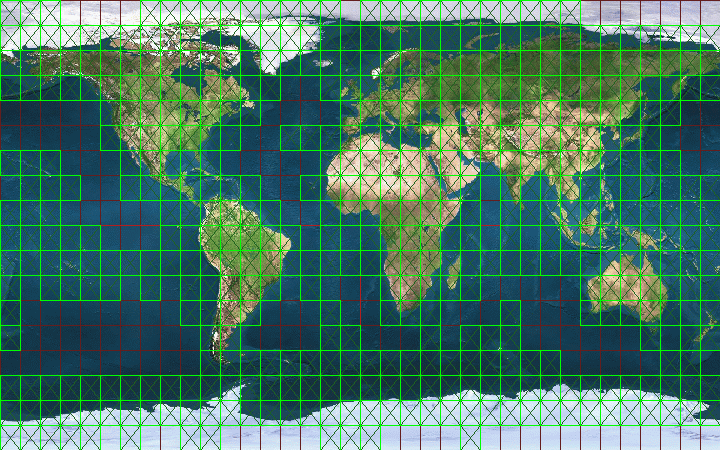

FGFS Scenery Downloads Version 0.9.2
Click on any of the 10x10 degree chunks in the image below to
download that area.
An area with no corresponding link means that area is all ocean
so there is nothing to download. (Or if a rebuild is in
progress, that chunk may not yet be generated.)
